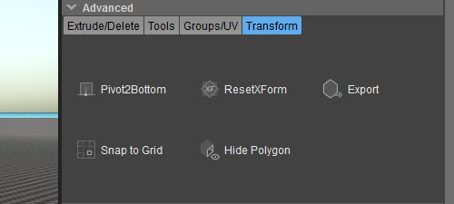

Обзор
С помощью инструментов, доступных в разделе «Преобразование» в разделе «Дополнительно», вы можете...

Pivot2Bottom
Перемещает точку поворота к нижней части твердого тела и центрирует его.
ResetXForm
Когда объект Designer масштабируется и поворачивается с помощью стандартных инструментов перевода (те, которые находятся в главном UI редактора), выбор этой опции установит новые значения по умолчанию.
Пример: вы создаете куб и масштабируете его в 1,3 раза по сравнению с исходным размером, а затем поворачиваете куб на 25°. Теперь нажатие этих кнопок сохранит масштаб и вращение, но вернёт их в исходное положение. масштаб 1,0 и 0° вращение.
Экспорт
Экспортирует файлы .obj, .cgf или .grp.
Привязка к сетке
При привязке к сетке (см. Привязка к сетке) активирован, привязывает выбранную вершину, ребро, многоугольник или опорную точку к ближайшей точке сетки.
Скрыть многоугольник
Скрывает выбранный многоугольник.